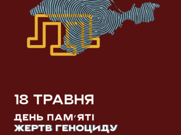
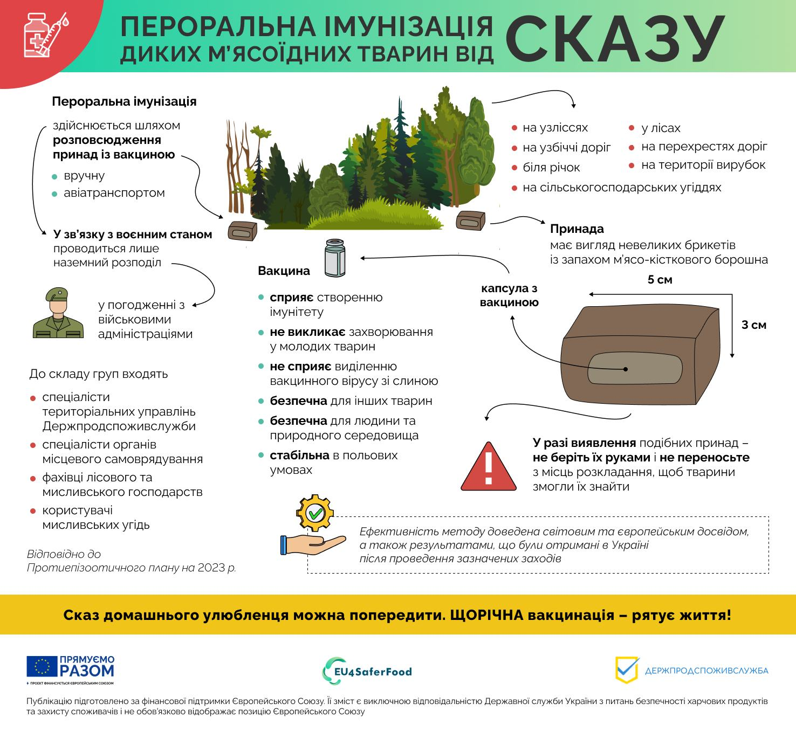
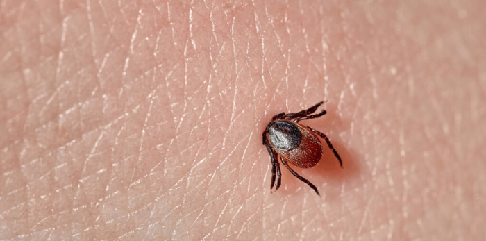
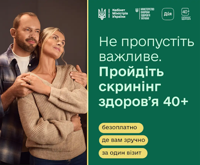
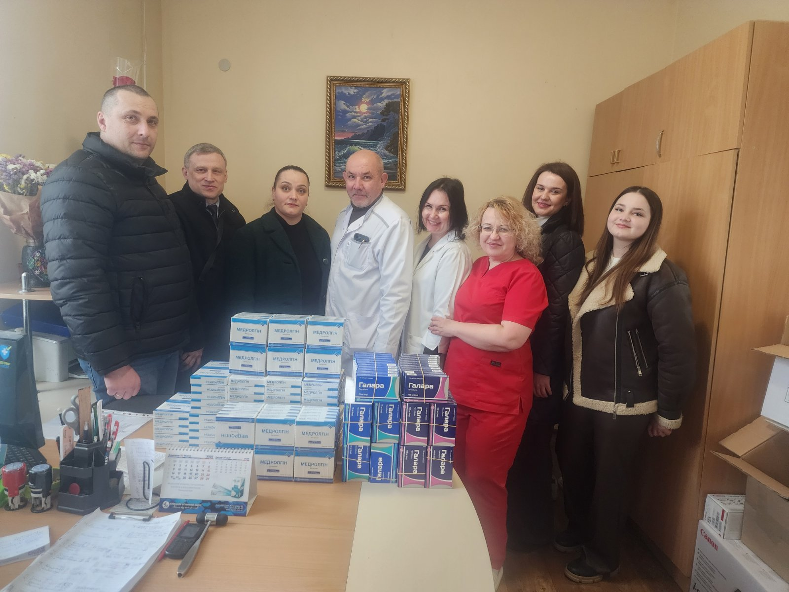

«100% ЖИТТЯ ЧЕРКАСИ»
Між Міністерством у справах ветеранів України та БО «100% ЖИТТЯ ЧЕРКАСИ» укладено відповідний договір, що надає нашій організації право забезпечувати надання послуг на території Черкаської області.
Читати далі
Національна служба здоров'я України підготувала «Гід для ветеранів: простими словами про медичні гарантії 2026»
З метою інформування ветеранів і ветеранок про гарантовані державою медичні послуги, маршрути отримання медичної допомоги та доступні програми підтримки.
Читати далі
НСЗУ: складні операції на серці у 2026 році — нові підходи до оплати та концентрації допомоги
У 2026 році напрям «Здорове серце» відповідно до стратегічних рішень Уряду визначено одним із пріоритетів Програми медичних гарантій.
Читати далі
18 травня Україна вшановує День пам'яті жертв геноциду кримськотатарського народу
18 травня Україна вшановує пам'ять жертв геноциду кримськотатарського народу. Саме цього дня у 1944 році сталінський режим розпочав масову депортацію кримських татар з їхньої історичної батьківщини.
Читати далі
12 травня — Міжнародний день медичної сестри
Свято вшановує самовіддану працю медсестер, їхню роль у догляді за пацієнтами та внесок у систему охорони здоров'я, що є особливо важливим для України.
Читати далі
Перелік лікарських засобів, що підлягають реімбурсації у межах програми «Доступні ліки» НСЗУ
До програми додано оригінальні інноваційні лікарські засоби, які застосовуються для лікування серцево-судинних захворювань, цукрового діабету 2 типу та хронічних захворювань легень.
Читати далі
Про проведення весняної кампанії з пероральної імунізації диких м'ясоїдних тварин у 2026 році
Інформація щодо проведення весняної кампанії з пероральної імунізації диких м'ясоїдних тварин проти сказу у 2026 році.
Читати далі
Що робити, якщо ви виявили на тілі кліща
Іксодові кліщі небезпечні, адже можуть переносити збудників інфекційних захворювань людини і тварин. Щоб зменшити ризик ускладнень, кліща важливо видалити правильно.
Читати далі
В Україні стартувала Національна програма Скринінг здоров'я 40+
За допомогою програми Скринінг здоров'я 40+ мільйони українців та українок матимуть змогу пройти обстеження на раннє виявлення серцево-судинних захворювань, цукрового діабету і проблем психічного здоров'я.
Читати далі
Подяка
Адміністрація КНП «Уманська ЦРЛ» Паланської сільської ради висловлює щиру подяку ТОВ «БЛУС ФАРМА» за надані медичні препарати.
Читати далі